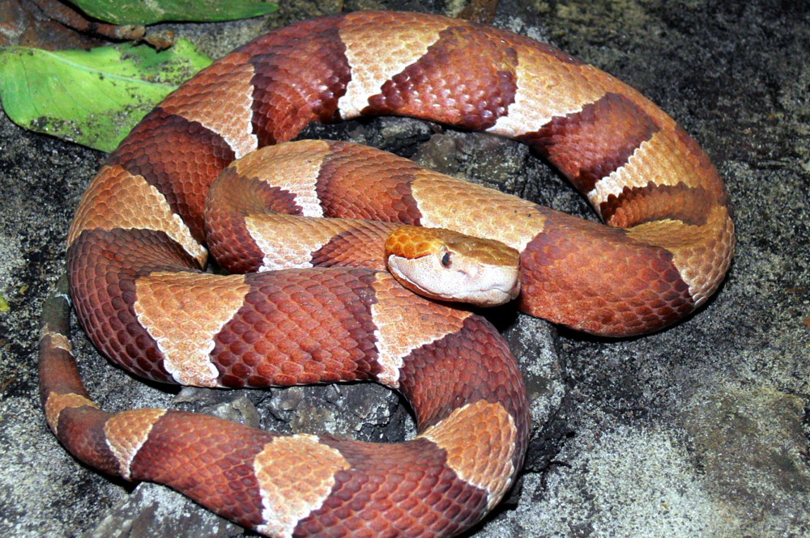
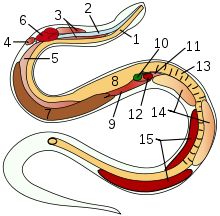

Зме́и (лат. Serpentes) — подотряд класса пресмыкающихся отряда чешуйчатые. Змеи обитают на всех континентах, кроме Антарктиды и нескольких крупных островов, таких как Ирландия и Новая Зеландия, а также множества мелких островов Атлантического океана и центральной части Тихого океана[1].страница 1 Некоторые змеи ядовиты, но неядовитые представлены бóльшим количеством видов. Ядовитые пользуются ядом в первую очередь для охоты (чтобы убить жертву), а не для самозащиты. Яд некоторых видов достаточно силён, чтобы убить человека. Неядовитые змеи либо заглатывают добычу живьём (ужи), либо предварительно убивают (удушают) её (полозы, удавы). Самые крупные известные змеи из ныне живущих на Земле — сетчатый питон и водяной удав анаконда. Длина самых мелких змей из ныне живущих — Leptotyphlops carlae — не превышает 10 сантиметров[2]. Размер большинства змей не превышает одного метра[3].
Змеи произошли от ящериц и являются монофилетической группой[4][комм. 1]. По молекулярным данным, ближайшие их родственники среди современных ящериц — игуанообразные и веретеницеобразные, образующие вместе с ними кладу Toxicofera[en]. Некоторые морфологические исследования указывают на то, что в эту кладу входят и мозазавры, причём они являются сестринской группой змей[5].
Эволюция змей сопровождалась существенными изменениями в высококонсервативном регуляторном участке, отвечающем за включение экспрессии гена SHH (Sonic hedgehog). В результате замен и делеций внутри энхансера оказались «испорчены» или утрачены сайты связывания транскрипционных факторов, и ген SHH перестал включаться в тех зонах эмбриона, где у всех остальных позвоночных, от хрящевых рыб до млекопитающих, формируются почки конечностей. Сам ген и другие его регуляторные области остались при этом консервативными, как и следовало ожидать, исходя из многофункциональности гена SHH[8].
Тело змеи покрыто чешуйчатой кожей. Вопреки расхожему мнению (из-за возможной путаницы змей с червями) змеиная кожа сухая, а не влажная и слизистая. У большинства видов змей кожа со стороны живота особая и приспособлена для большего сцепления с поверхностью, облегчая перемещение. Веки змеи представлены прозрачными чешуйками и остаются постоянно закрытыми. Смена кожного покрова змеи называется шелушением или линькой. У змей кожа меняется одномоментно и одним слоем[9]. Несмотря на кажущуюся неоднородность, кожный покров змеи не является дискретным, и слущивание верхнего слоя кожи — эпидермиса — в процессе линьки напоминает выворачивание чулка наизнанку[10]. Форма и количество чешуек на голове, спине и животе зачастую является характерным для данного вида и используется в процессе идентификации в таксономических целях. Чешуйки называют главным образом в соответствии с их расположением на теле. У более развитых («продвинутых») змей (Caenophidia) широкие полосы ряда спинных чешуек соответствуют позвонкам, что позволяет сосчитать позвонки змеи без вскрытия. Глаза змеи покрывают специальные прозрачные чешуйки (Brille) — неподвижные веки. Таким образом, их глаза фактически всегда остаются открытыми, даже во время сна. Однако они могут быть прикрыты кольцами тела.
Череп змей диапсидный, но обе височные дуги отсутствуют. Мозговая коробка спереди имеет окостенение[14], что защищает мозг при заглатывании крупной добычи. Череп большинства змей отличается сильным развитием кинетизма, то есть многие кости черепа подвижны относительно друг друга. У змей очень подвижны квадратные, соединённые с ними чешуйчатые, а также верхнечелюстные, верхневисочные, нёбные и крыловидные кости, которые соединены с мозговой коробкой эластичными связками[14]. Угловая, надугловая и сочленовная кости нижней челюсти сросшиеся, а между ними и зубной костью присутствует подвижное сочленение. Обе половины нижней челюсти соединены эластичной связкой. Такая система подвижно сочленённых костей способствует чрезвычайно широкому раскрыванию рта, что необходимо для заглатывания крупной добычи целиком, а также обеспечивает возможность независимых движений правой и левой половин челюстного аппарата при проталкивании добычи в глотку с поочередным перехватыванием. Всё это позволяет змеям заглатывать относительно очень крупную добычу, по размерам часто превышающую толщину туловища змеи[15].
Внутренние органы имеют вытянутую форму и расположены асимметрично. Кроме того, некоторые из парных органов утратили одну половину и стали непарными. Например, у наиболее примитивных змей развиты оба лёгких, но при этом правое всегда больше левого; у большинства змей левое лёгкое совсем исчезает либо рудиментарно. Гадюки и некоторые другие змеи, помимо правого лёгкого, имеют еще и так называемое трахейное лёгкое, образованное расширенной задней частью трахеи. Само же лёгкое в своей задней части преобразовано в тонкостенный резервуар для воздуха. Водяным змеям оно служит плавательным пузырём. Он очень растяжим, и змея может сильно раздуваться при вдохе, а при выдохе может издавать громкое и продолжительное шипение.
Сердце змей расположено в области раздвоения трахеи и заключено в сердечную сумку — перикард. В связи с отсутствием диафрагмы сердце способно перемещаться, что защищает его от возможного повреждения при прохождении крупных жертв по пищеводу. Сосудистая система змей также имеет особенности. Селезёнка с прикреплённым к ней жёлчным пузырём, а также поджелудочная железа фильтруют кровь. В сердечно-сосудистой системе змей имеется уникальная почечная портальная система — кровь от хвоста змеи проходит через почки, прежде чем вернуться к сердцу. Вилочковая железа находится в жировой ткани выше сердца и отвечает за выработку иммунных клеток в кровь. Лимфатические узлы у змей отсутствуют[16]. Пищевод змей очень мускулист, что облегчает проталкивание пищи в желудок, который представляет собой удлинённый мешок, переходящий в сравнительно короткий кишечник.
 цвета в hex